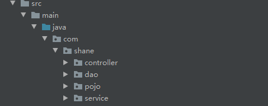
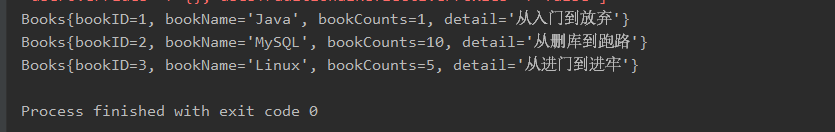

SSM整合（模板） 首先声明一下环境
1 2 3 4 5 JDK：1.8 Tomcat：8.5.54 Idea：2019 MySQL：5.7.29 Maven：3.6.3
创建一个数据库
1 2 3 4 5 6 7 8 9 10 11 12 13 14 15 16 17 18 CREATE DATABASE `ssmbuild` ;USE `ssmbuild` ;DROP TABLE IF EXISTS `books` ;CREATE TABLE `books` (`bookID` INT (10 ) NOT NULL AUTO_INCREMENT COMMENT '书id' ,`bookName` VARCHAR (100 ) NOT NULL COMMENT '书名' ,`bookCounts` INT (11 ) NOT NULL COMMENT '数量' ,`detail` VARCHAR (200 ) NOT NULL COMMENT '描述' ,KEY `bookID` (`bookID` )) ENGINE =INNODB DEFAULT CHARSET =utf8 INSERT INTO `books` (`bookID` ,`bookName` ,`bookCounts` ,`detail` )VALUES (1 ,'Java' ,1 ,'从入门到放弃' ), (2 ,'MySQL' ,10 ,'从删库到跑路' ), (3 ,'Linux' ,5 ,'从进门到进牢' );
新建工程SSM_Template ，导入Maven依赖。包括mybatis，mybatis-spring，springmvc，junit，servlet，jsp，数据库MySQL驱动，数据库连接池（这里使用c3p0）
1 2 3 4 5 6 7 8 9 10 11 12 13 14 15 16 17 18 19 20 21 22 23 24 25 26 27 28 29 30 31 32 33 34 35 36 37 38 39 40 41 42 43 44 45 46 47 48 49 50 51 52 53 54 55 56 57 58 59 60 61 <dependencies > <dependency > <groupId > junit</groupId > <artifactId > junit</artifactId > <version > 4.12</version > </dependency > <dependency > <groupId > mysql</groupId > <artifactId > mysql-connector-java</artifactId > <version > 8.0.15</version > </dependency > <dependency > <groupId > com.mchange</groupId > <artifactId > c3p0</artifactId > <version > 0.9.5.2</version > </dependency > <dependency > <groupId > javax.servlet</groupId > <artifactId > servlet-api</artifactId > <version > 2.5</version > </dependency > <dependency > <groupId > javax.servlet.jsp</groupId > <artifactId > jsp-api</artifactId > <version > 2.2</version > </dependency > <dependency > <groupId > javax.servlet</groupId > <artifactId > jstl</artifactId > <version > 1.2</version > </dependency > <dependency > <groupId > org.mybatis</groupId > <artifactId > mybatis</artifactId > <version > 3.5.2</version > </dependency > <dependency > <groupId > org.mybatis</groupId > <artifactId > mybatis-spring</artifactId > <version > 2.0.2</version > </dependency > <dependency > <groupId > org.springframework</groupId > <artifactId > spring-webmvc</artifactId > <version > 5.1.9.RELEASE</version > </dependency > <dependency > <groupId > org.springframework</groupId > <artifactId > spring-jdbc</artifactId > <version > 5.1.9.RELEASE</version > </dependency > </dependencies >
同时配置资源过滤设置
1 2 3 4 5 6 7 8 9 10 11 12 13 14 15 16 17 18 19 20 <build > <resources > <resource > <directory > src/main/java</directory > <includes > <include > **/*.properties</include > <include > **/*.xml</include > </includes > <filtering > false</filtering > </resource > <resource > <directory > src/main/resources</directory > <includes > <include > **/*.properties</include > <include > **/*.xml</include > </includes > <filtering > false</filtering > </resource > </resources > </build >
（由于新建工程时，没有选择任何模板，因此不要忘记在ＷEb-INF中引入lib目录，并导入所有的jar包，（一定不能漏掉）
创建好所有的包目录
com.shane.dao
com.shane.service
com.shane.pojo
com.shane.controller

1. Mybatis层 新建dao接口和对应的mapper配置文件
1 2 3 4 5 6 7 8 9 10 11 12 public interface BooksDao int addBook (Books books) int deleteBookById (@Param("bookId" ) int id) int updateBook (Books books) Books queryByBookId (int id) ; List<Books> queryAllBook () ; }
同时创建对应的Mapper配置文件，BooksDaoMapper.xml
1 2 3 4 5 6 7 8 9 10 11 12 13 14 15 16 17 18 19 20 21 22 23 24 25 26 27 <?xml version="1.0" encoding="UTF-8" ?> <!DOCTYPE mapper PUBLIC "-//mybatis.org//DTD Config 3.0//EN" "http://mybatis.org/dtd/mybatis-3-mapper.dtd" > <mapper namespace ="com.shane.dao.BooksDao" > <insert id ="addBook" parameterType ="Books" > insert into ssmbuild.books(bookName, bookCounts, detail) values (#{bookName},#{bookCounts},#{detail}); </insert > <delete id ="deleteBookById" parameterType ="int" > delete from ssmbuild.books where bookID=#{bookId} </delete > <update id ="updateBook" parameterType ="Books" > update ssmbuild.books set bookName=#{bookName},bookCounts=#{bookCounts},detail=#{detail} where bookID=#{bookId}; </update > <select id ="queryBookById" resultType ="Books" > select * from ssmbuild.books where bookID=#{bookId} </select > <select id ="queryAllBook" resultType ="Books" > select * from ssmbuild.books </select > </mapper >
配置mybatis，创建Mybatis-config.xml ，其中配置数据源的部分交给spring完成。
1 2 3 4 5 6 7 8 9 10 11 12 13 <?xml version="1.0" encoding="UTF-8" ?> <!DOCTYPE configuration PUBLIC "-//mybatis.org//DTD Config 3.0//EN" "http://mybatis.org/dtd/mybatis-3-config.dtd" > <configuration > <typeAliases > <package name ="com.shane.pojo" /> </typeAliases > <mappers > <mapper resource ="com/shane/dao/BooksDaoMapper.xml" /> </mappers > </configuration >
2. Spring层
整合mybatis，新建配置文件spirng-dao.xml
1 2 3 4 5 6 7 8 9 10 11 12 13 14 15 16 17 18 19 20 21 22 23 24 25 26 27 28 29 30 31 32 33 34 35 36 37 38 39 40 41 42 43 44 45 46 47 48 49 50 51 <?xml version="1.0" encoding="UTF-8"?> <beans xmlns ="http://www.springframework.org/schema/beans" xmlns:xsi ="http://www.w3.org/2001/XMLSchema-instance" xmlns:context ="http://www.springframework.org/schema/context" xsi:schemaLocation ="http://www.springframework.org/schema/beans http://www.springframework.org/schema/beans/spring-beans.xsd http://www.springframework.org/schema/context https://www.springframework.org/schema/context/spring-context.xsd" > <context:property-placeholder location ="classpath:database.properties" /> <bean id ="dataSource" class ="com.mchange.v2.c3p0.ComboPooledDataSource" > <property name ="driverClass" value ="${jdbc.driver}" /> <property name ="jdbcUrl" value ="${jdbc.url}" /> <property name ="user" value ="${jdbc.username}" /> <property name ="password" value ="${jdbc.password}" /> <property name ="maxPoolSize" value ="30" /> <property name ="minPoolSize" value ="3" /> <property name ="autoCommitOnClose" value ="false" /> <property name ="checkoutTimeout" value ="10000" /> <property name ="acquireRetryAttempts" value ="2" /> </bean > <bean id ="sqlSessionFactory" class ="org.mybatis.spring.SqlSessionFactoryBean" > <property name ="dataSource" ref ="dataSource" /> <property name ="configLocation" value ="classpath:Mybatis-config.xml" /> </bean > <bean class ="org.mybatis.spring.mapper.MapperScannerConfigurer" > <property name ="sqlSessionFactoryBeanName" value ="sqlSessionFactory" /> <property name ="basePackage" value ="com.shane.dao" /> </bean > </beans >
整合service层，新建spring-service.xml
1 2 3 4 5 6 7 8 9 10 11 12 13 14 15 16 17 18 19 20 21 22 <?xml version="1.0" encoding="UTF-8"?> <beans xmlns ="http://www.springframework.org/schema/beans" xmlns:xsi ="http://www.w3.org/2001/XMLSchema-instance" xmlns:context ="http://www.springframework.org/schema/context" xsi:schemaLocation ="http://www.springframework.org/schema/beans http://www.springframework.org/schema/beans/spring-beans.xsd http://www.springframework.org/schema/context http://www.springframework.org/schema/context/spring-context.xsd" > <context:component-scan base-package ="com.shane.service" /> <bean id ="bookServiceImpl" class ="com.shane.service.BooksServiceImpl" > <property name ="bookMapper" ref ="booksDao" /> </bean > <bean id ="transactionManager" class ="org.springframework.jdbc.datasource.DataSourceTransactionManager" > <property name ="dataSource" ref ="dataSource" /> </bean > </beans >
3. SpringMVC层 添加web支持之后，配置web.xml
1 2 3 4 5 6 7 8 9 10 11 12 13 14 15 16 17 18 19 20 21 22 23 24 25 26 27 28 29 30 31 32 33 34 35 36 37 38 39 <?xml version="1.0" encoding="UTF-8"?> <web-app xmlns ="http://xmlns.jcp.org/xml/ns/javaee" xmlns:xsi ="http://www.w3.org/2001/XMLSchema-instance" xsi:schemaLocation ="http://xmlns.jcp.org/xml/ns/javaee http://xmlns.jcp.org/xml/ns/javaee/web-app_4_0.xsd" version ="4.0" > <servlet > <servlet-name > DispatcherServlet</servlet-name > <servlet-class > org.springframework.web.servlet.DispatcherServlet</servlet-class > <init-param > <param-name > contextConfigLocation</param-name > <param-value > classpath:applicationContext.xml</param-value > </init-param > <load-on-startup > 1</load-on-startup > </servlet > <servlet-mapping > <servlet-name > DispatcherServlet</servlet-name > <url-pattern > /</url-pattern > </servlet-mapping > <filter > <filter-name > encodingFilter</filter-name > <filter-class > org.springframework.web.filter.CharacterEncodingFilter</filter-class > <init-param > <param-name > encoding</param-name > <param-value > utf-8</param-value > </init-param > </filter > <filter-mapping > <filter-name > encodingFilter</filter-name > <url-pattern > /*</url-pattern > </filter-mapping > <session-config > <session-timeout > 15</session-timeout > </session-config > </web-app >
配置mvc，创建spring-mvc.xml
1 2 3 4 5 6 7 8 9 10 11 12 13 14 15 16 17 18 19 20 21 22 23 24 25 26 27 28 29 <?xml version="1.0" encoding="UTF-8"?> <beans xmlns ="http://www.springframework.org/schema/beans" xmlns:xsi ="http://www.w3.org/2001/XMLSchema-instance" xmlns:context ="http://www.springframework.org/schema/context" xmlns:mvc ="http://www.springframework.org/schema/mvc" xsi:schemaLocation ="http://www.springframework.org/schema/beans http://www.springframework.org/schema/beans/spring-beans.xsd http://www.springframework.org/schema/context http://www.springframework.org/schema/context/spring-context.xsd http://www.springframework.org/schema/mvc https://www.springframework.org/schema/mvc/spring-mvc.xsd" > <mvc:annotation-driven /> <mvc:default-servlet-handler /> <bean class ="org.springframework.web.servlet.view.InternalResourceViewResolver" > <property name ="viewClass" value ="org.springframework.web.servlet.view.JstlView" /> <property name ="prefix" value ="/WEB-INF/jsp/" /> <property name ="suffix" value =".jsp" /> </bean > <context:component-scan base-package ="com.shane.controller" /> </beans >
整合spring的配置文件，新建applicationContext.xml
1 2 3 4 5 6 7 8 9 <?xml version="1.0" encoding="UTF-8"?> <beans xmlns ="http://www.springframework.org/schema/beans" xmlns:xsi ="http://www.w3.org/2001/XMLSchema-instance" xmlns:mvc ="http://www.springframework.org/schema/mvc" xsi:schemaLocation ="http://www.springframework.org/schema/beans http://www.springframework.org/schema/beans/spring-beans.xsd http://www.springframework.org/schema/mvc https://www.springframework.org/schema/mvc/spring-mvc.xsd" > <import resource ="spring-service.xml" /> <import resource ="spring-dao.xml" /> <import resource ="spring-mvc.xml" /> </beans >
到处为止，所有的配置都已经结束。
4. 新建controller测试web 1 2 3 4 5 6 7 8 9 10 11 12 13 14 @Controller @RequestMapping ("/book" )public class SSMController @Autowired @Qualifier ("bookServiceImpl" ) private BooksService booksService; @RequestMapping ("/allBook" ) public String findAll (Model model) List<Books> books=booksService.queryAllBook(); model.addAttribute("booklist" ,books); return "hello" ; } }
视图的建立
index.jsp
1 2 3 4 5 6 7 8 9 <%@ page contentType="text/html;charset=UTF-8" language="java" %> <html> <head> <title>$Title$</title> </head> <body> <a href="${pageContext.request.contextPath}/book/allBook">点击进入列表页</a> </body> </html>
hello.jsp
1 2 3 4 5 6 7 8 9 <%@ page contentType="text/html;charset=UTF-8" language="java" %> <html> <head> <title>Title</title> </head> <body> <h1>hi,ssm</h1> </body> </html>
运行即可。
测试数据库操作是否正确
新建测试类MyTest.java
1 2 3 4 5 6 7 8 9 10 11 public class MyTest @Test public void test () ApplicationContext context=new ClassPathXmlApplicationContext("applicationContext.xml" ); BooksService bookServiveImpl=(BooksService) context.getBean("bookServiceImpl" ); for (Books books:bookServiveImpl.queryAllBook()){ System.out.println(books); } } }
运行结果为

成功。